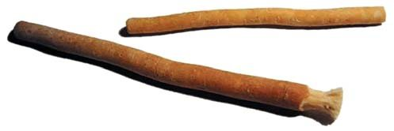
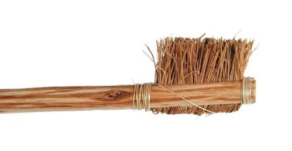
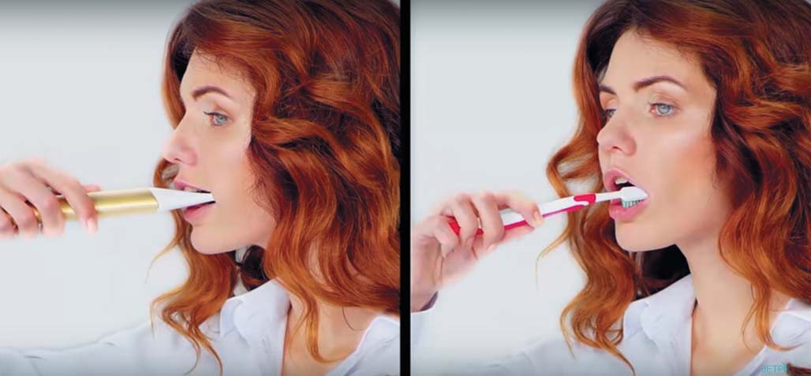
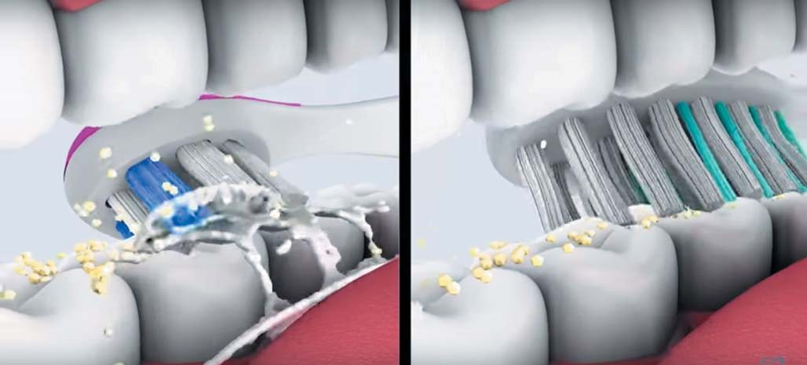
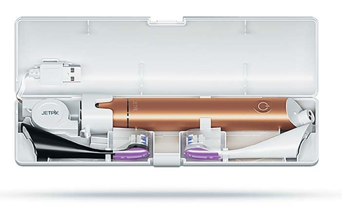
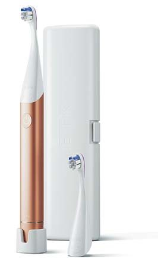
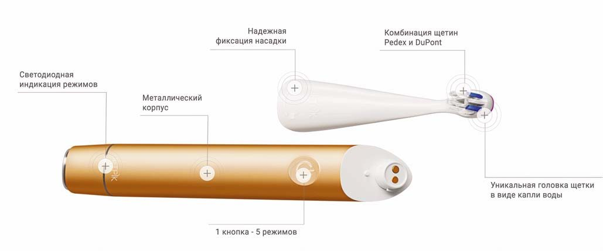

Профілактика · журнал «ДентАрт» 2019 №1
Зубна щітка: від альфи до омеги
TOOTHBRUSH: FROM ALPHA TO OMEGA
Ярослава Дубиняк,заступник директора Jetpik Ukraine (м. Київ, Україна)
Нині розроблені різні види зубних щіток, які роблять гігієну ротової порожнини ефективною і зручною. Однак обізнаність населення про переваги вибору того чи іншого типу щітки ще залишається низькою. Визнання мільйонів користувачів завоювали електричні зубні щітки. У статті йдеться про правильний вибір таких щіток, показання та протипоказання до їх використання. Аналізуються особливості застосування звукових та ультразвукових щіток, зокрема йдеться про нову розробку американських технологів – звукову зубну щітку Jetpik JP300, яка дозволяє ефективно очистити важкодоступні місця ротової порожнини.
Зубна щітка незаслужено обділена нашою увагою. Ми готові обійти десятки магазинів і переміряти сотні пар взуття, доки не виберемо ту єдину пару, в той час як пристосування, яке щодня забезпечує нам здоров’я і красу, більшість купує наосліп. Тим часом недбалий догляд за ротовою порожниною може призвести до розвитку серйозних захворювань не тільки зубів і ясен, а й серця. Правильна гігієна ротової порожнини – важливий засіб запобігання хворобам, включаючи хвороби за межами ротової порожнини.
Еволюція зубної щітки
Стоматологія – одна з тих галузей медицини, які розвиваються найшвидше. А розвиток технологій дозволив істотно поліпшити рівень засобів і методів догляду за ротовою порожниною.
Спочатку була гілочка...
Прототипи зубних щіток з’явилися ще в третьому тисячолітті до нашої ери. Стародавні єгиптяни спочатку чистили зуби пальцем, а потім стали застосовувати для цих цілей звичайну гілочку, скошлативши її з одного краю. Поняття «toothbrush» виникло наприкінці XVII століття (перше вживання слова приписують містеру Ентону Вуду).
Сучасні вчені розробили різні види зубних щіток, які роблять гігієну ротової порожнини доступною, приємною і зручною. Залишилося тільки зробити правильний вибір.
Сьогодні існує величезна кількість щіток, які відрізняються не тільки тим, з якого матеріалу вони зроблені, але й технікою роботи. Крім звичайних мануальних щіток, у продажу є також звукові, пульсуючі і з головкою, що обертається.


Електричні щітки
Пройшовши десятки досліджень і випробувань, електричні щітки завоювали визнання мільйонів користувачів. Ось лише кілька очевидних переваг електричних зубних щіток. Передусім, вони не залежать від умінь і спритності користувача. З їх допомогою навіть маленькі діти і люди з обмеженими фізичними можливостями можуть повноцінно почистити зуби. Електричні зубні щітки допомогли не одній дитині подолати страх перед походом у стоматологічний кабінет.
Після 3 місяців використання електричної зубної щітки бактеріальний наліт при гінгівіті скорочується на 10%. Разом з цим зменшується і запалення ясен – на 5%. У порівнянні з мануальної щіткою, електричні щітки роблять у сотні разів більше очисних рухів, тому вони чинять активніший механічний вплив при очищенні зубів і з більшою інтенсивністю видаляють зубний наліт. Але важливо пам’ятати, що їх потрібно використовувати з низькоабразивними зубними пастами, щоб уникнути зайвого впливу на зубні тканини. Якщо ж у людини є клиновидні дефекти зубів, оголення шийок, електричну зубну щітку ліпше застосовувати у поєднанні з гелеподібною зубною пастою, яка не має абразивності і дозволяє очищати зуби без зайвого тертя.
Як вибрати щітку
Щітка не повинна бути громіздкою і важкою, її оптимальна вага – не більше 100-200 грамів. Що ж до розміру головки щітки, то оптимальною вважається та, яка при чищенні одночасно охоплює один-два зуби і дістає до всіх ділянок ротової порожнини, що підлягають очищенню. Кінчик зубної щітки повинен бути звуженим і заокругленим, щоб можна було очистити далеко розміщені зуби.
Головний критерій при виборі будь-якої щітки – якість щетини. Вона буває різної жорсткості. Дуже м’які і м’які зубні щітки підходять дітям і тим, у кого є захворювання зубів, пародонту або слизової оболонки рота. Жорсткі і дуже жорсткі щітки підходять для дорослих людей, у яких швидко утворюється зубний камінь. Деякі виробники компілюють щетину різного ступеня жорсткості, домагаючись ефекту очищення жувальної поверхні зубів і ясенних жолобків.
В електричних щітках буває різна кількість рядів. 4-рядні – найпоширеніший вид, вони рекомендуються для дорослих. 3-рядні можуть використовувати діти. Монопучкові щітки ідеально підходять для очищення зубів з різними ортопедичними конструкціями.
В електричної зубної щітки передбачаються кілька швидкостей, в ідеалі ж вона повинна мати мінімум два режими. Додатковими характеристиками щітки можуть бути: лампочка контролю зарядки акумулятора, індикатор ступеня зносу її щетини, сигнал тривалості чищення зубів, датчик, який сигналізує про сильний тиск щітки на зуби. Якщо ж виробник оснастив щітку змінними насадками з маркером, нею може користуватися індивідуально вся сім’я.


Показання і протипоказання
Користь цього приладу полягає в тому, що вдається набагато швидше й ефективніше видаляти зубний наліт. Електричні зубні щітки краще впливають на пришийкову зону зубів, де найчастіше з’являється ураження карієсом. Крім ефективнішого очищення, електрична зубна щітка бореться з простим гінгівітом. За регулярного використання вдається позбутися сильної кровоточивості ясен. А вплив вібруючими щетинками на ясна забезпечуватиме профілактику гінгівіту.
Серед очевидних плюсів електрощітки виділяють ефективніше очищення, видалення пігментації, яка виникає через шкідливі звички, комплексне чищення усієї ротової порожнини і боротьбу із зубним каменем. Переваг може бути більше або менше в залежності від типу щітки.
Протипоказання до використання електричної щітки:
- хірургічне втручання при пародонтиті;
- після операцій у зубощелепній зоні;
- після онкологічних операцій у ротовій порожнині;
- рухливість зубів III ступеня;
- проблеми емалі (флюороз, демінералізація);
- гіпертрофічний гінгівіт;
- стоматит.
Слід зазначити, що протипоказання до застосування зубних електрощіток тимчасові. Усі патології можна усунути, після чого можна відновити гігієнічні процедури. Однак якщо ви відчуваєте дискомфорт при чищенні зубів, вам потрібна електрична щітка з м’якою щетиною, про що вже говорилося вище.
В інших випадках шкода завдається, тільки якщо людина не вивчила протипоказання до використання. Також проблеми можуть виникнути, якщо довго не міняти головку щітки. Навіть при правильному зберіганні на ній з часом збирається величезна кількість мікробів, які при вібрації будуть активно поширюватися в ротовій порожнині. Крім цього, ворсинки зношуються і втрачають свою ефективність. Слід вчасно замінювати цей елемент (не рідше, ніж раз на 3 місяці, як і механічну зубну щітку).
Звукові та ультразвукові зубні щітки
Серед електричних щіток усе більшої популярності набувають звукові зубні щітки. Передусім це пов’язано з якістю очищення. На нерухомій головці розташовуються щетинки, які приводяться в рух завдяки звуковій частоті. Дуже часто люди плутають два поняття – звукова і ультразвукова щітка. У чому різниця між ними? Звукові щітки працюють на частоті 200-400 Гц і роблять 24000-48000 коливань щетинок за хвилину, а ультразвукові працюють на частоті 1,6 МГц і роблять до 192000000 рухів за хвилину.
Ультразвукові електричні щітки здатні ліквідовувати стійкі зубні відкладення, в тому числі камінь. Це дозволяє підтримувати зуби в гарному стані, не вдаючись до професійного чищення у стоматолога. Однак з цим гігієнічним приладом слід бути акуратними. Коливання високої частоти, що генеруються ультразвуковою щіткою, викликають дуже швидку вібрацію синтетичного ворсу, тому немає потреби в механічних рухах. Досить просто змочити прилад водою і прикласти до зубів на 5-10 секунд. І якщо у людини здорові зуби, немає коронок, вінірів і пломб, цей спосіб дасть позитивний ефект. Однак стоматологи не радять чистити емаль ультразвуковою щіткою щодня. Її рекомендують як допоміжний аксесуар для ретельного догляду за ротовою порожниною. Ліпше поєднувати її використання із застосуванням стандартної щітки, а ультразвукове очищення робити 2-3 рази на тиждень, в залежності від швидкості утворення нальоту. Якщо ж у вас крихка емаль з низьким вмістом кальцію, є коронки, пломби, вініри або хронічні запальні процеси в порожнині, ультразвукові хвилі можуть призвести до руйнування з’єднання фіксуючого матеріалу конструкцій і емалі, а також до загострення хронічних хвороб.
Звукова щітка
Хочеться звернути увагу на нову розробку американських технологів – звукову зубну щітку Jetpik JP300 як ідеальну модель здорового способу догляду за ротовою порожниною, яка поєднує інновації, функціональність та естетику «в одному флаконі». Головка цієї щітки зроблена у вигляді краплі води зі спеціальним вигнутим наконечником, завдяки якому можна очистити важкодоступні місця ротової порожнини. Особлива форма корпусу не дозволить щетині доторкнутися до поверхні, якщо ви покладете щітку горизонтально.
Звукова щітка Jetpik JP300 керується однією кнопкою на корпусі і має 5 режимів очищення: сильне очищення, помірне чищення, режим для чутливих зубів, масаж ясен і відбілювання зубів. Визначити, в якому режимі працює щітка, допоможе кольоровий світловий індикатор. Для забезпечення максимального гігієнічного ефекту розробники використали комбінацію щетини середньої та м’якої жорсткості світових виробників Pedex diamond filament і DuPont. Поєднання вимітаючих і кругових коливань щетинок сприяє якісному очищенню зубів від м’якого нальоту.
Оскільки стоматологи в усьому світі рекомендують чистити зуби дві хвилини для найефективнішого очищення, Jetpik JP300 видає проміжний сигнал кожні 15 секунд і вібруючий сигнал після 2 хвилин роботи. Корпус гаджета виконаний з металу (алюміній+анодоване покриття в чорному, золотому, срібному, рожево-золотому, сапфіровому та фіолетовому кольорах) і має трикутний переріз, завдяки чому він зручно лежить у руці і не ковзає. І що особливо зручно, за рахунок вбудованого акумулятора Jetpik JP300 може працювати до 30 днів без підзарядки.



Висновки
Цельс стверджував: «Людина здорова, доки здорові її зуби». Електрична звукова зубна щітка розрахована на непідготовленого користувача. Вона не вимагає особливих знань і дотримання певної техніки чищення: широкий діапазон режимів і насадок (для відбілювання, дбайливого догляду, посиленого очищення і т. д.) дозволяє підібрати варіант, який підходить практично всім. Люди, як правило, приділяють дуже мало часу боковим зубам і їх внутрішньому боку, що провокує розвиток карієсу та інших захворювань. Також важливо виділяти час міжзубним проміжкам і важкодоступним місцям, з цим завданням найліпше впорається іригатор.
Щоб звести ризик розвитку карієсу і захворювань пародонту до мінімуму, найважливішою умовою залишається регулярна гігієна ротової порожнини (і передусім, звичайно, самостійна), тому підбір індивідуальних засобів догляду за ротовою порожниною для пацієнта – першочергове завдання.